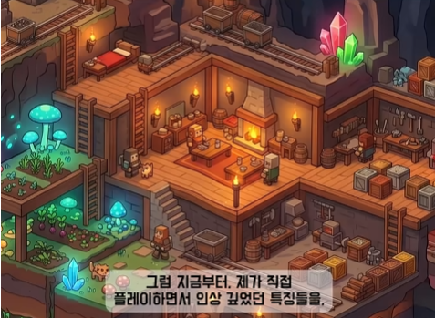

01 · 중첩 입체 모듈
큰 투명 구조물은 시스템, 그 안의 작은 입체 블록은 모듈입니다. 선택한 시스템을 열어 내부 모듈을 꺼내 탐색합니다.
클릭하면 원본 이미지가 열립니다.02 · 구형 모듈 군집
구형 군집이 시스템이고, 내부의 작은 구체가 모듈입니다. 선택한 군집의 껍질을 열어 관계와 내부 구성을 봅니다.
클릭하면 원본 이미지가 열립니다.03 · 조립체 구조
프로젝트를 결합된 입체 부품의 조립체로 표현합니다. 기능 묶음을 분해하면 내부 모듈과 연결 지점이 드러납니다.
클릭하면 원본 이미지가 열립니다.04 · 입체 분기 구조
큰 가지는 시스템 포함 관계, 가지 끝의 입체 부품은 모듈입니다. 선택한 기능의 의존 관계만 별도 연결로 강조합니다.
클릭하면 원본 이미지가 열립니다.05 · 펼쳐지는 입체 서랍
큰 구획은 시스템이고 그 안의 입체 서랍·부품은 모듈입니다. 선택한 구획을 앞으로 펼쳐 내부를 탐색합니다.
클릭하면 원본 이미지가 열립니다.사용자 레퍼런스

목재·돌·발광 수정의 분위기와 방·층이 보이는 단면 구조를 반영했습니다. 원본은 변경하지 않았습니다.
R1 · 층별 작업실
레퍼런스의 단면 작업실을 적용했습니다. 큰 구역은 시스템, 방 하나는 모듈, 통로는 연결 관계입니다.
클릭하면 원본 이미지가 열립니다.R2 · 분리된 입체 구역
시스템별 입체 공간을 분리하고 다리로 연결했습니다. 선택한 구역을 확대해 내부의 모듈 방을 탐색하는 방향입니다.
클릭하면 원본 이미지가 열립니다.R3 · 열린 모듈 하우스
선택한 시스템의 벽을 열어 모듈 방들을 보여줍니다. 전체 시스템들과 선택한 모듈의 위치를 동시에 유지하는 방향입니다.
클릭하면 원본 이미지가 열립니다.